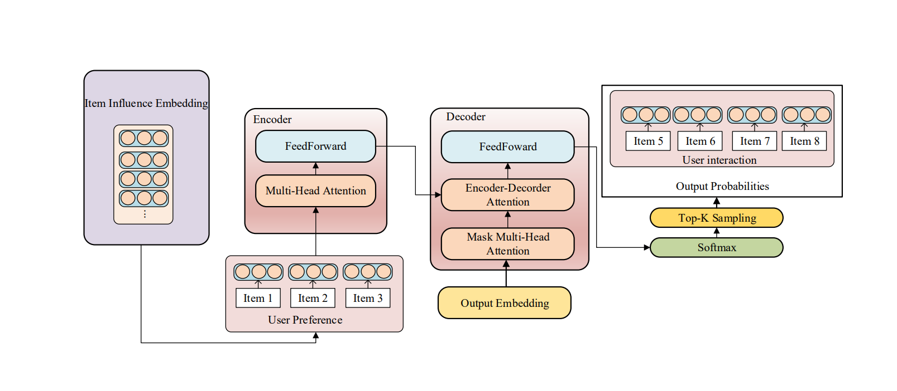

Index Terms: Next Top-k Recommendation · Influence Diffusion Embedding · Social Recommendation · Cold-Start Problem
User Preference Translation Model for Next Top-k Items Recommendation with Social Relations
Abstract Introduction RelatedWorks Methodology Experiment
1nd Hao-Shang Ma Institute of Computer and Communication Engineer Department of Electrical Engineering National Cheng Kung University Tainan, Taiwan ablove904@gmail.com
2rd Jen-Wei Huang Department of Electrical Engineering National Cheng Kung University Tainan, Taiwan jwhuang@mail.ncku.edu.tw
Abstract. Recommendation systems are used to predict the interests of users through the analysis of historical preferences. Collaborative filtering-based approaches usually ignore the sequential information and sequential recommendation usually focus on the next item prediction. In thiswork, we would like to determine the next top-k recommendation problem. We propose User Preference Translation Model (UPTM) with item in influence embedding and social relations between users. In addition, we will also solve the cold start problem in UPTM.
In sequential recommendation research, we consider the sequential information in users behavior. Given the users’ interaction behavior, the problem can be defined as predicting the next item which user will interact. However, we would like to recommend the next k items which users will interact in the future. First, we address the recommendation problem as the next top-k recommendation problem. We propose a User Preference Translation Model with item influence embedding, abbrev. as UPTM, to solve this problem. In the future, we would like to join the social relations between user and propose the social recommendation with UPTM. In addition, the cold start problem is usually ignored in the sequential recommendation systems. We will propose a new scheme to deal with the cold start problem in UPTM.
I. INTRODUCTION
Recommendation systems are trying to learn the low dimen- sional representation of users and items. Many features can be adopted in recommendation systems, for example, user-item interactions, user features, item features, and other information such as the temporal factor.
Collaborative filtering-based approaches focus on learning users’ preference and predict the items which users will have interest. The sequential relations in users behavior are usually ignored in collaborative filtering. In our opinion, the trigger relations between items are important for users behavior. For example, people usually watch a series of related movies after they watch one of the movie in this series. We would like to discover the target items which can trigger users to buy as much related items as possible. Therefore, we adopt the social influence propagation concept to model the trigger relations between items. In social network, people spread influence to their neighbors and receive influence from their neighbors at the same time. People usually be activated by their friends, family, and followees. Same as the social network, assume an item-item network is formed from users’ sequential interaction behavior with item. The propagation of item influence can be used to indicate the likelihood of a user interacting with a related item based on their interaction with the target item.
II. RELATED WORKS
A. Collaborative Filtering with Deep Neural Network
Collaborative filtering solves the recommendation problem by assuming that users with similar behaviors exhibit similar preferences for items. He et al. [2] propose NeuMF to combine the multi-layer perceptron and matrix factorization to learn the user and item embedding. Wang et al. [4] propose NGCF which is based on the graph neural network. They encodes the collaborative signal which represents the high-order con- nectivities by performing embedding propagation. Another kind of Generative Adversarial Networks-based methods try to apply GAN to recommendation. Chae et al. [1] suggest a new direction of vector-wise adversarial training and propose the GAN-based CF framework.
B. Social Recommendation Systems
On social network, people spread influence to their neigh- bors and receive influence from their neighbors at the same time. A user is activated by another user since they have same opinion tendency. Social recommendation systems that examine the propagation of influence among network members end up with users who share similar interests connected along diffusion paths. Wu et al. [5] propose DiffNet to model the recursive social influence propagation process and learn the user and item representation in social recommendation. Zhu et

Fig. 1. The Framwork of User Preference Translation model with Item Influence diffusion Embedding
TABLE 1.
Overall performance comparison
| methods |
Movielens 1M |
Movielens 20M |
Amazon Book |
Yahoo E-commerce |
| ND@5 |
ND@10 |
ND@20 |
ND@5 |
ND@10 |
ND@20 |
ND@5 |
ND@10 |
ND@20 |
ND@5 |
ND@10 |
ND@20 |
| BPR-MF |
0.086 |
0.0812 |
0.0901 |
0.0786 |
0.0864 |
0.0916 |
0.0118 |
0.0107 |
0.0129 |
0.0138 |
0.0141 |
0.0153 |
| CFGAN |
0.1066 |
0.0962 |
0.0916 |
0.0856 |
0.0986 |
0.09 |
0.0166 |
0.0152 |
0.0188 |
0.0152 |
0.0154 |
0.0178 |
| NeuMF |
0.0945 |
0.1033 |
0.1131 |
0.1193 |
0.1168 |
0.1231 |
0.0135 |
0.0141 |
0.0166 |
0.0144 |
0.0164 |
0.0177 |
| NGCF |
0.1168 |
0.1157 |
0.1235 |
0.0931 |
0.0921 |
0.098 |
0.0191 |
0.0176 |
0.0184 |
0.0156 |
0.0187 |
0.0215 |
| UPTM |
0.1888 |
0.1996 |
0.1946 |
0.2001 |
0.2185 |
0.2327 |
0.0268 |
0.0283 |
0.0245 |
0.0189 |
0.0201 |
0.0197 |
al. [6] propose Social Collaborative Mutual Learning Model to combine the item-based collaborative filtering and social collaborative filtering.
III. METHODOLOGY
A. Problem Definitions
In the current study, recommendations are generated by using previous behavior patterns to predict the items that are likely to interest the user in the future. In the following, denotes the user set and denotes the item set. Each user u has preference record ,where t is the interactive order. Based on a given Pu , our objective is to recom-mend the next k items with which user u is likely to interact.
B. User Preference Translation Model
The proposed translation-based recommendation model is illustrated in Fig. 1. The model includes a simulation of item embedding and a translation of user preferences. The proposed scheme is based on the assumption that users are likely to interact with items that are associated with other items that they already possess. We propose using influence diffusion to learn the relationships among items. We first generate item influence diffusion paths from social influence paths sampled from the item-item relation graph from which
UPTM learns the item influence embedding by which to encode user preferences. UPTM then learns the parameters in the hidden layer to output the item embedding and generate a recommendation list from the decoder of the translation module, to which is applied a softmax function and top-k sampling.
C. User Preference Translation Model for Social Recommen- dation
We would like to apply UPTM on social recommendation by adding the users’ social relation in the item embeddings. Each user are encoded into a user embedding to represent the user’s social relations in the social network. Then, we add the user embedding into the items to translate the user preference.
IV. EXPERIMENTAL RESULTS AND FUTURE WORKS
For evaluating the performance of proposed model, we compare UPTM model with other existing model on real sev- eral datasets such as Movielen, Amazon, and Yahoo datasets. We use the precision, recall and NDCG metrics to evaluate the performance for UPTM. In table I, we only show the results of NDCG. For overall performance comparison, UPTM outperforms other comparing methods on three metrics for the next k item recommendation problem. All experimental results are shown in our UPTM works [3]. In addition, we
social recommendation. The social recommendation consider the users’ preference and users’ social relation simultaneously. However, most sequential recommendation cannot deal the cold start problem since the new items are not shown in the training process. The sequential recommendation usually ignore this problem. In previous recommendation systems, they usually use the popularity of items or the similarity of users’ preference to recommend. We would like use the users’ social relation and give the initial item embedding for cold start items. We will join this idea to solve the cold start problem in UPTM.
REFERENCES
1. D.-K. Chae, J. Kang, J.-S. Kang, S.-W. Kim, J. Lee, and J.-T. Lee. Cfgan: A generic collaborative filtering framework based on generative adversarial networks. In in Proceedings of the 27th ACM CIKM, pages 137 - 146, 2018.
2. X. He, L. Liao, H. Zhang, L. Nie, X. Hu, and T.-S. Chua. Neural collaborative filtering. In In Proceedings of WWW, pages 173 - 182, 2017.
3. H.-S. Ma and J.-W. Huang. User preference translation model for recommendation system with item influence diffusion embedding. In In Proceedings of IEEE/ACM International Conference on ASONAM, pages 50 - 54, 2020.
4. X. Wang, X. He, M. Wang, F. Feng, and T.-S. Chua. Neural graph collaborative filtering. In in Proceedings of the 42nd International ACM SIGIR, pages 165 - 174, 2019.
5. L. Wu, P. Sun, Y. Fu, R. Hong, X. Wang, and M. Wang. A neural influence diffusion model for social recommendation. In In Proceedings of the 42nd International ACM SIGIR, pages 235 - 244, 2019.
6. T. Zhu, G. Liu, and G. Chen. Social collaborative mutual learning for item recom-mendation. ACM Transactions on Knowledge Discovery from Data, 14, 2020.